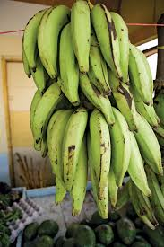
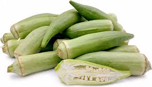

Yams are native to warmer regions of both hemispheres,and several species are cultivated as staples food crops in the tropics.
in certain tropical cultures,notablyin West African and New Guinea,the yam is the primary agricultural commodity and the
focal point of elaborate rituals. Yams are consumed as cooked starchy vegetables.

African plantain
Plantain major group of banana varieties (genus Musa) that are staple food in many tropical areas. The edible fruit of plantain bananahas more starch than the
common dessert and is not eaten raw. Because plantain have the most starch before they ripen, they are usually cooked green, either boiled or fried, in savory
dishes. The ripe fruits are mimildly sweet and are often cooked with coconut juice or sugar as a flovouring. Plantain may also be dried
for later use in cookig or ground for use as a meal, which can be further refined to flour.
African Garden Eggs
African garden eggs are a type of eggplant used as a food crop in several counties across Africa. These small, whitw fruits have a teardrop or round roundish shape and are
valued for their bitterness, Garden egg is indigenous to sub-saharan Africa and can be stored for up to three months by allowing
it to dry, which is particularly useful in tropical regions where refrigeration may be limited. In Ghana, gargen eggs is one of the three most consumed vegetables,
alongside tomatoes and pepper. It is used in stews and can also be eaten raw. Interestingly,the stems and leaves of garden egg are consumed in some some African countries, although
not in Ghana. Due to its spongy texture, garden eggs is sometimes used as a less expensive meat substitues, as it absorbs otheer flavors well.

Okro
Okro also known as okra, gumbo,or ladys fingers, is a verssatile vegetables found around the world. It is often used for making soups, stews, and sauces. In Nigeria, it is a key ingredient
in popular dishes like okra soup and ogbono-okra mixed soup Okra is a flowering plant with edible seed pods, and it is cultivated in warm and tropical climates, including African
and south Asia.